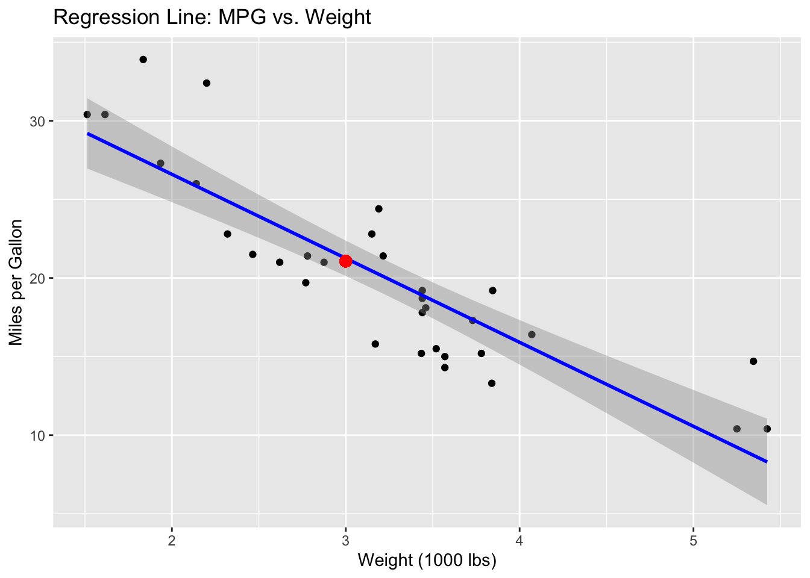
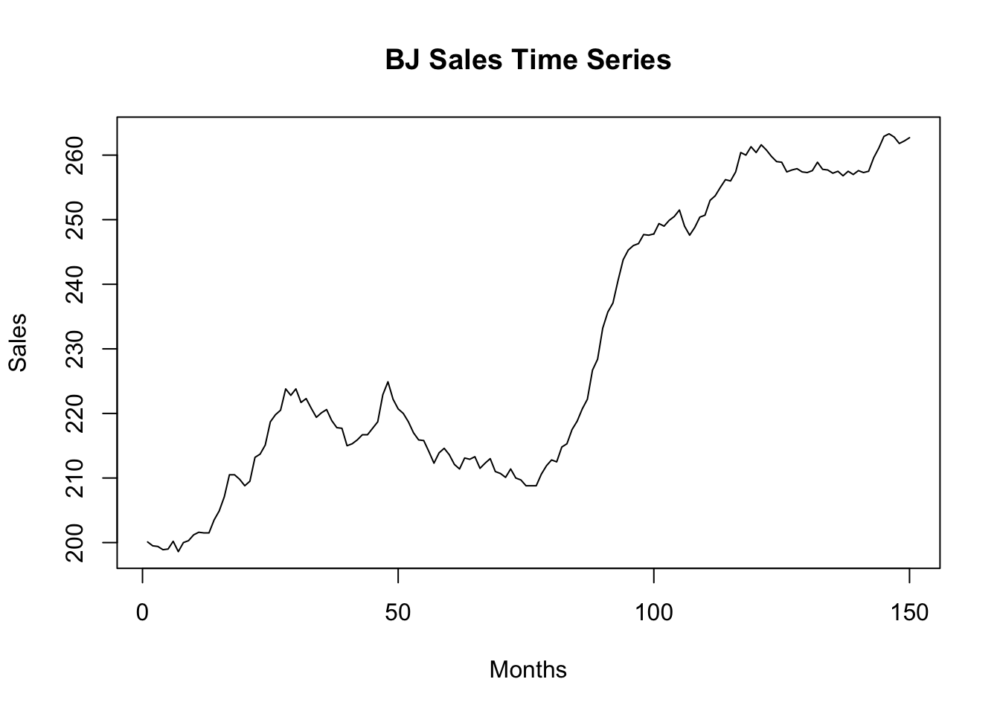
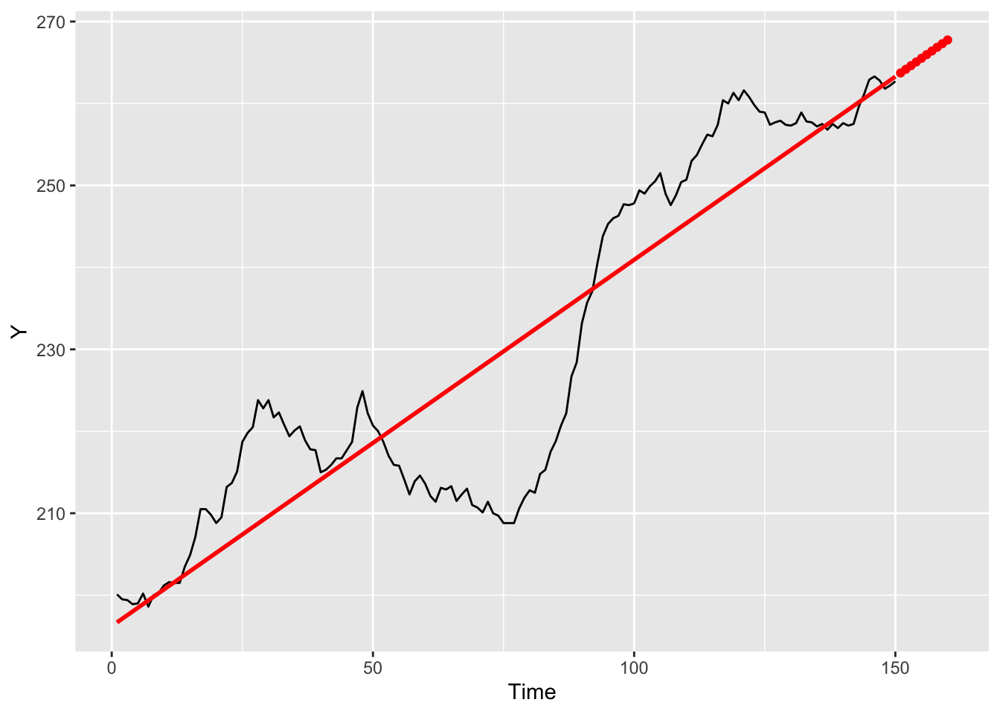

Chapter 5 Twitter data analysis and RMarkdown
5.2 In-class Exercises
1.1. Work with the mtcars dataset. Use group_by() and summarize()
to find the average miles per gallon for each number of cylinders.
library(dplyr)
avg_mpg_per_cyl <- mtcars %>% group_by(cyl) %>% summarize(avg_mpg = mean(mpg))
avg_mpg_per_cyl## # A tibble: 3 × 2
## cyl avg_mpg
## <dbl> <dbl>
## 1 4 26.7
## 2 6 19.7
## 3 8 15.11.2. Create a linear regression model. Predict the miles per gallon for a car with 6 cylinders and a weight of 3000 lbs.
model <- lm(mpg ~ cyl + wt, data = mtcars)
predicted_mpg <- predict(model, newdata = data.frame(cyl = 6, wt = 3000/1000)) # weight converted to 1000s lbs
predicted_mpg## 1
## 21.066581.3. Plot the regression line.
ggplot(mtcars, aes(x = wt, y = mpg)) +
geom_point() +
geom_smooth(method = "lm", color = "blue") +
geom_point(aes(x = 3, y = predicted_mpg), color = "red", size = 3) +
labs(title = "Regression Line: MPG vs. Weight",
x = "Weight (1000 lbs)", y = "Miles per Gallon")
2.1. Work with another time series dataset called BJsales in R.
Sales, 150 months; taken from Box and Jenkins (1970). Visualize the time
series data.

2.2. Use linear regression to model the trend component. Predict the number of sales for the next 10 months
df_time_series <- data.frame(Y=as.matrix(BJsales), Time = time(BJsales))
model_BJ <- lm(Y ~ Time, data = df_time_series)
future_time <- data.frame(Time = c(151:160))
predicted_sales <- predict(model_BJ, newdata = future_time)2.3. Plot the regression line.
df_time_series %>%
ggplot(aes(Time, Y)) +
geom_line() +
geom_smooth(method = "lm", se = FALSE, color = "red") +
# add future predictions
geom_point(data = data.frame(Time = future_time$Time, Y = predicted_sales), color = "red")
5.3 Twitter Analysis with R
5.3.1 Why Perform Data Mining on Twitter?
Twitter, with its 217 million active users, sees an average of 500 million tweets per day. This high volume makes social media platforms like Twitter a rich source of user-generated textual data. By processing and interpreting these tweets, we can gain insights into people’s preferences, sentiments, and trends on various topics.
Twitter mining can be utilized for analyzing advertising campaigns, studying customer behavior, predicting election outcomes, and even in academic research.
5.5 Loading Packages
library(stringr) # for str_replace_all function (cleaning tweets)
library(dplyr) # for data frame manipulation functions like anti_join, inner_join, count, ungroup
library(magrittr) # for pipe operator %>%
library(ggplot2) # for data visualization
library(readr) # for reading data frames
library(rtweet) # for fetching tweets
library(wordcloud) # for creating word clouds
library(stopwords) # for a package of stop words
#library(syuzhet) # for sentiment analysis in English
library(xlsx) # for Excel5.6 Twitter Settings
To analyze Twitter data, you need access to the Twitter API. This requires an application for a Twitter Developer account. Once approved, you will be provided with personal keys for access.
5.7 Timeline Analysis
Let’s fetch all tweets from a user’s timeline and create a word cloud based on the most frequently used words.
5.7.1 Fetching Tweets from an Account
Let’s look at the column names:
You can download the Tweets data I scraped with this link: http://kelesonur.github.io/compec-r/tweets_ince.csv
5.8 Cleaning the Tweets
Before analyzing the content, it’s essential to clean the tweets to remove unwanted characters, URLs, mentions, hashtags, and convert them to lower case for uniformity.
clean_tweets <- function(x) {
x %>%
str_remove_all(" ?(f|ht)(tp)(s?)(://)(.*)[.|/](.*)") %>%
str_replace_all("&", "and") %>%
str_replace("RT @[a-z,A-Z]*: ","") %>%
str_remove_all("[[:punct:]]") %>%
str_replace_all("@[a-z,A-Z]*","") %>%
str_replace_all("#[a-z,A-Z]*","") %>%
str_remove_all("^RT:? ") %>%
str_remove_all("@[[:alnum:]]+") %>%
str_remove_all("#[[:alnum:]]+") %>%
str_replace_all("\\\n", " ") %>%
str_to_lower() %>%
str_trim("both")
}
clean_tweet = gsub("&", "", my_tweets$text)
clean_tweet = gsub("(RT|via)((?:\\b\\W*@\\w+)+)", "", clean_tweet)
clean_tweet = gsub("@\\w+", "", clean_tweet)
clean_tweet = gsub("[[:punct:]]", "", clean_tweet)
clean_tweet = gsub("[[:digit:]]", "", clean_tweet)
clean_tweet = gsub("http\\w+", "", clean_tweet)
clean_tweet = gsub("[ \t]{2,}", "", clean_tweet)
clean_tweet = gsub("^\\s+|\\s+$", "", clean_tweet)
my_tweets$text_clean <- clean_tweet %>% clean_tweets5.12 Sentiment Analysis in Turkish
Sentiment analysis, also known as opinion mining, is a method used in natural language processing to identify and categorize opinions expressed in a text. The goal is to determine the writer’s or speaker’s attitude towards a particular topic, product, or service as positive, negative, or neutral. This technique is widely used to analyze customer feedback, social media conversations, and product reviews, helping businesses and organizations gauge public opinion, monitor brand and product sentiment, and understand customer needs and concerns. Advanced sentiment analysis may also capture emotional nuances and intensity, providing deeper insights into the underlying sentiments.
5.12.1 Import the lexicon
To do a sentiment analysis in Turkish, we need a lexicon. You can download the lexicon with this link: http://kelesonur.github.io/compec-r/Turkish-tr-NRC-VAD-Lexicon.txt
5.12.3 Get the words and calculate sentiment
sentiment <- tweets_clean %>%
inner_join(TR_Lexicon) %>%
count(Word, Arousal, Valence, Dominance, sort = TRUE) %>%
ungroup()
head(sentiment)Arousal, dominance, and valence are three dimensions often used in psychology to describe and measure emotions:
Arousal: This dimension refers to the level of alertness or stimulation an emotion provokes. It ranges from calm or low arousal (e.g., relaxed, bored) to excited or high arousal (e.g., angry, ecstatic). It represents the intensity of the emotion but not its nature (positive or negative).
Dominance: This dimension pertains to the sense of control or power associated with an emotion. Low dominance indicates feelings of being controlled or submissive (e.g., scared, anxious), while high dominance involves feeling in control or empowered (e.g., authoritative, independent). It reflects the degree of control a person feels they have in a particular emotional state.
Valence: Valence is about the intrinsic attractiveness (positive valence) or averseness (negative valence) of an emotion. Simply put, it describes the pleasantness or unpleasantness of an emotion. Happiness, joy, and love are examples of emotions with positive valence, whereas sadness, anger, and fear are associated with negative valence.
These three dimensions are used in models like the PAD (Pleasure-Arousal-Dominance) emotional state model, which is applied in various fields including psychology, affective computing, and even marketing research, to understand and predict human emotions and behaviors.
5.12.5 Most positive and negative words used by the person
positive <- sentiment %>%
subset(Valence > 0.90) %>%
group_by(Word) %>%
top_n(10) %>%
ungroup() %>%
mutate(Word = reorder(Word, Valence)) %>%
ggplot(aes(Word, Valence)) +
geom_point(show.legend = FALSE) +
labs(title = "Most Positive Words",
y = "Valence",
x = NULL) +
coord_flip()
positive
# Negativity
negative <- sentiment %>%
subset(Valence < 0.10) %>%
group_by(Word) %>%
top_n(10) %>%
ungroup() %>%
mutate(Word = reorder(Word, Valence)) %>%
ggplot(aes(Word, Valence)) +
geom_point(show.legend = FALSE) +
labs(title = "Most negative words",
y = "Valence",
x = NULL) +
coord_flip()
negative5.12.6 Use get_nrc_sentiment() for English sentiment analysis
words <- iconv(words, from="UTF-8", to="ASCII", sub="")
ew_sentiment<-get_nrc_sentiment((words))
sentimentscores<-data.frame(colSums(ew_sentiment[,]))
names(sentimentscores) <- "Score"
sentimentscores <- cbind("sentiment"=rownames(sentimentscores),sentimentscores)
rownames(sentimentscores) <- NULL
ggplot(data=sentimentscores,aes(x=sentiment,y=Score))+
geom_bar(aes(fill=sentiment),stat = "identity")+
theme(legend.position="none")+
xlab("Sentiments")+ylab("Scores")+
ggtitle("Total sentiment based on scores")+
theme_minimal()5.13 In-class Exercises
We have fetched Muharrem İnce’s tweets for you and shared them as a .csv file earlier. Do the following task in groups using this csv:
Sentiment Analysis
Tweet Series Analysis
Word Cloud
5.14 RMarkdown
5.14.2 Introduction to RMarkdown
RMarkdown is a powerful tool for creating dynamic documents, presentations, and reports that combine R code with written narratives. It allows you to embed R code within Markdown documents, which is particularly useful for data analysis, academic research, and reproducible reporting.
5.14.3 Getting Started with RMarkdown
To use RMarkdown, you need to have R and RStudio installed. RStudio is an integrated development environment (IDE) for R that provides a convenient interface for working with RMarkdown. You have already completed this step!
5.14.3.1 Installing R and RStudio
Install R: Download and install R from CRAN.
Install RStudio: Download and install RStudio from RStudio’s website.
5.14.3.2 Installing the RMarkdown Package
Open RStudio and install the rmarkdown package by running:
5.14.3.3 Creating Your First RMarkdown Document
Create a New RMarkdown Document: In RStudio, go to
File > New File > R Markdown.... You’ll be prompted to create a new document.Choose Document Type: Select the type of document you want to create (e.g., HTML, PDF, Word). Click
OK.RMarkdown Structure: An RMarkdown file opens with some default content. It contains:
YAML Header: At the top, enclosed within
---, where you specify document settings like title, author, and output format.Markdown Text: For writing narrative text. Markdown is a simple formatting syntax.
Code Chunks: Enclosed in
```{r}and```, where you write R code.
5.14.3.4 Example Document
This is an R Markdown document. Markdown is a simple formatting syntax for authoring HTML, PDF, and MS Word documents.
5.14.3.5 Compiling the Document
To compile the document into your chosen format (HTML, PDF, or Word), click the `Knit` button in RStudio. This will execute the R code within the document and combine the results with the narrative text.
To conclude, RMarkdown is a versatile tool for combining code, data analysis, and narrative in a single document. It’s highly useful for reproducible research and reporting.
Let’s now do some hands-on tutorial on RMarkdown!